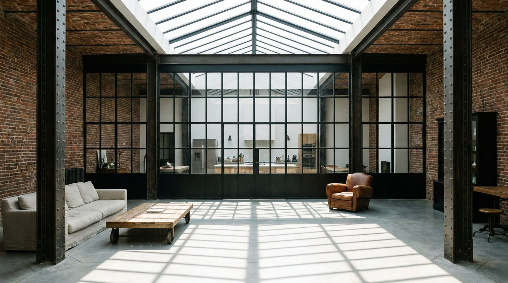

Atlante · FR-05 · Francia · Île-de-France
Loft / atelier industriale con verrière
Esempi · esterno e interno


Perché funziona
volumi neutri e grandi permettono di posizionare il mobile al centro senza competizione visiva; è la tipologia "contemporanea" più richiesta nei cataloghi di arredo.
Architettura · elementi riproducibili
- Verrière zenitale o shed, 4–6 m di campata; HSP 5–6 m
- Muri in mattone a vista o intonaco grezzo; travi in acciaio rivettato; pilastri in ghisa
- Pavimento in cemento levigato o rovere grezzo; serramenti in ferro nero
- Scala in ferro, passerella, grandi aperture a tutta altezza
Luce
zenitale diffusa, 5500–6000 K, forte caduta verso il basso; possibile fascio di sole sulle superfici opache; ombre nette a terra.
Prompt di generazione (EN)
Industrial loft interior in a converted 1920s refrigeration warehouse, 5.5 m ceiling, riveted steel beams, exposed brick walls, polished concrete floor, huge north skylight, black steel-framed windows, low linen sofa, walnut sideboard. Even diffused skylight from above, 5700 K, soft shadows with one subtle sun patch on the floor. 24 mm lens, f/5.6, camera at 1.4 m, wide symmetrical composition, high detail on materials, no people, 3:2.
Errori tipici da controllaremattoni troppo regolari; travi che non scaricano su pilastri; luce da studio (softbox) invece che da shed; scala che porta al nulla.
Riferimenti reali
- Les Frigos, 19 rue des Frigos, 13e apri ↗
- Atelier Brancusi (Centre Pompidou)